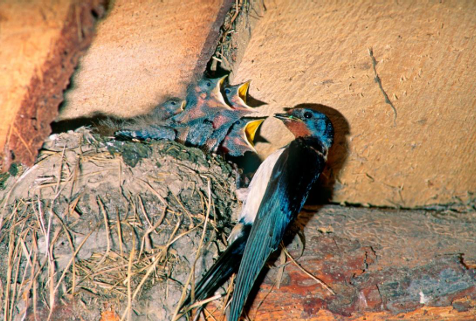
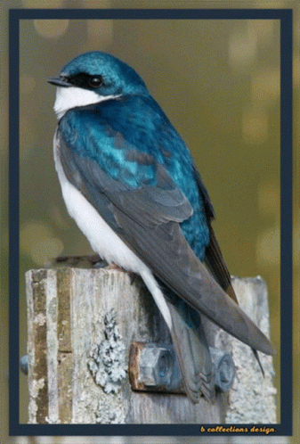

Dymówka jest najliczniejszą i szeroko rozpowszechnioną jaskółką w Polsce. Jako gatunek synantropijny gniazda buduje we wnętrzach budynków gospodarczych - stodołach, oborach, stajniach - o ile mają otwory umożliwiające swobodny przelot, a czasem także pod mostami. Chętnie przebywa w pobliżu zwierząt gospodarskich, do których przylatują owady stanowiące jej pokarm. Dymówki łapią owady w locie - często gromadnie i głośno - polując nad zabudowaniami, łąkami i wodami. W locie osiągają 90 km/h, zachowując przy tym dużą zwrotność.
| W Polsce żyją jeszcze dwa gatunki jaskółek. Oknówka, również synantropijna, buduje kuliste gniazda nad oknami, pod okapami i rynnami. Brzegówka gnieździ się kolonijnie w norach wykopanych w skarpach nad rzekami i w żwirowniach. Podobny do jaskółek, lecz większy jest jerzyk - ptak spędzający całe dorosłe życie w locie: poluje, je, goduje i śpi w powietrzu, siadając jedynie na jajach. |
 |
| Dymówki są ptakami wędrownym, odlatującymi w październiku na zimowiska w południowej Afryce i powracającymi w marcu i kwietniu. Wędrówka jesienna trwa ok. 10 tygodni - wiosenna jest dwukrotnie szybsza. Jesienią ptaki często odpoczywają na drutach energetycznych i nocują gromadnie w trzcinowiskach. Widok stad wlatujących w trzciny dał początek legendzie, że jaskółki zimują zagrzebane w mule na dnie jezior. |
 |